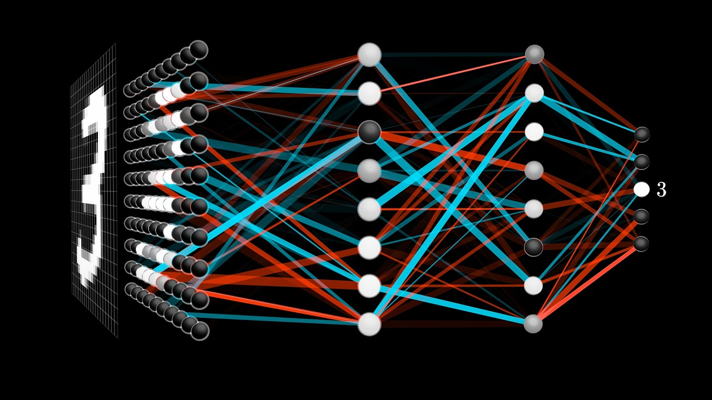
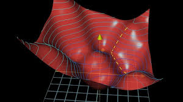
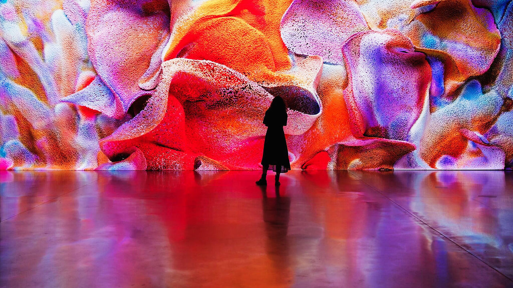
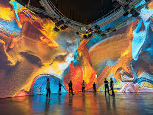
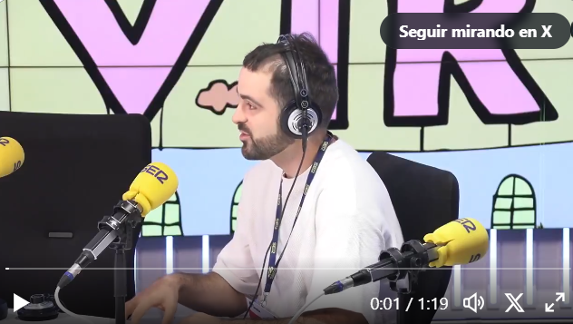
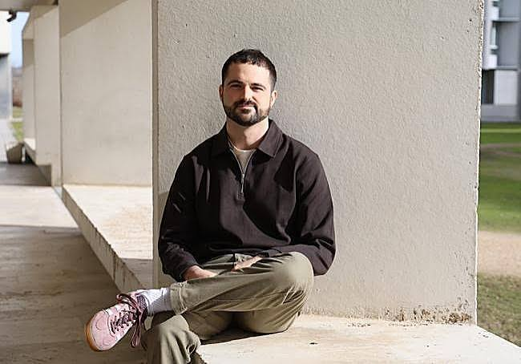

Beyond Work
Personal Interests
My interests move between mathematics, machine learning and artistic expression.
Interests


Mathematical Communication
3Blue1Brown
One of the strongest inspirations behind my interest in this area has been 3Blue1Brown. A long time ago, when I first watched the Neural Networks series, I felt that ideas from machine learning could be explained with both rigor and intuitive visualzizations. This was a trigger to me, and it made me want to learn more about the topic and ended up shaping my interests.


Data, Art, and Imagination
Refik Anadol
I am also very drawn to the work of Refik Anadol. What interests me most is the way he transforms data, memory, and machine-generated structures into immersive visual experiences. His projects are a reminder that the same computational ideas we use in science can also create wonder, emotion, and a very different way of engaging with complexity.
Media

Cadena SER · June 21, 2026
World Cup stickers and probability
I briefly explained why completing the 2026 World Cup album by buying packs alone is astronomically unlikely, and why the expected cost is far higher than it seems.

El Norte de Castilla · March 16, 2026
Why hard mathematical problems can be addictive
A very short profile on the excitement of difficult mathematical problems and the curiosity that keeps me coming back to them.